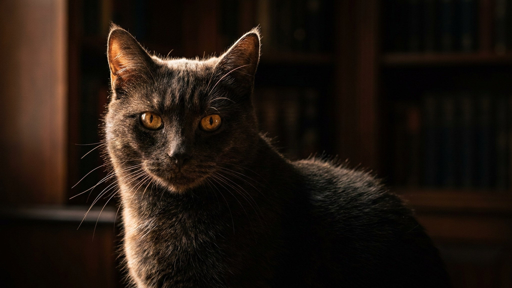

Яванская кошка встречает вас у двери, вслух комментирует каждое ваше движение и укладывается спать строго на вас. Это не издержки воспитания: породу веками отбирали как максимально контактную и голосистую, и в пустой квартире ей по-настоящему тяжело. Ниже — характер этой «тени», уход за шелковистой шерстью без подшёрстка и честный ответ, кому такая кошка подойдёт, а кому лучше присмотреться к другой породе.
🐾 Ваш питомец — яванская кошка?
Заведите профиль в AnimaLife: приложение запомнит породу, возраст и вес и будет подсказывать по уходу именно для неё. Вопросы AI-ветеринару — круглосуточно и бесплатно.
Завести профиль → Завести в MAX →
У вас iPhone? AnimaLife есть в App Store
Яванская — представитель ориентальной группы, близкая родня сиамской и балинезийской кошек. От них она унаследовала стройное мускулистое тело, большие уши-локаторы и главную черту — разговорчивость. Это не бессмысленное мяуканье: кошка действительно «беседует», меняя интонацию под ситуацию, и ждёт, что вы ответите.
Голос — часть породного темперамента, а не каприз. Яванская кошка умна, легко учится трюкам и открывает дверцы, а без нагрузки для ума начинает искать приключения сама. По телосложению это лёгкая, поджарая и подвижная кошка средних размеров: она прыгуча, любит забираться повыше и до старости сохраняет котёнка внутри.
Главное о яванской: она выбирает человека и живёт рядом с ним. Типичные проявления:
Такой кошке нужен собеседник и занятость. Пары активных игр в день, игрушки-головоломки и вертикальные маршруты по квартире снимают половину «проблемного» поведения.
Шерсть у яванской полудлинная, шелковистая и почти без подшёрстка — она меньше сваливается и линяет скромнее пушистых пород. Достаточно вычёсывать раз в неделю мягкой щёткой, чтобы шубка блестела.
Обратная сторона тонкой шерсти — кошка легко мёрзнет и не любит сквозняков. Тёплое место для сна и отсутствие холодных потоков воздуха важнее, чем частое мытьё. Большие уши стоит осматривать и мягко очищать по мере загрязнения, а когти — подстригать раз в пару недель; к этим процедурам приучают с котёнка, тогда взрослая кошка терпит их спокойно.
Яванская кошка — для тех, кто дома много и хочет живого, включённого компаньона: она будет разговаривать, встречать и участвовать в жизни семьи. А вот людям, которые ценят тишину и подолгу отсутствуют, порода дастся тяжело — от скуки и одиночества страдают и кошка, и нервы владельца.
Если берёте активную породу, полезно заранее знать её склонности по здоровью и режиму, чтобы выстроить уход и профилактику под неё, а спорные моменты обсуждать со своим ветеринаром.
🐾 У вас яванская кошка?
AnimaLife соберёт уход под породу: к каким болезням есть склонность, что проверять по возрасту, чем кормить и когда пора к врачу. Бесплатно, прямо в мессенджере.
Собрать план ухода → Собрать в MAX →
У вас iPhone? AnimaLife есть в App Store
🐾 Понравился разбор?
Подпишитесь на канал — каждый день разбираем по одному тревожному симптому у кошек и собак: что в пределах нормы, а когда пора к врачу. Подпишитесь, чтобы не пропустить разбор, который может спасти здоровье вашего питомца.